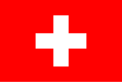
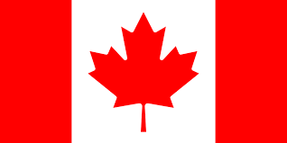

| Rang | Image | Course | Pays | Distance | Dénivelé+ | Particularités | Commentaire |
|---|---|---|---|---|---|---|---|
| 🥇 | |
Barkley Marathons |
États-Unis
|
160 km
|
18 000 m | Course secrète, départ intéderminé jusqu'à ce Laze fume sa clope, navigation sans balisage à la bousole dans les ronces ~1 % de finishers | Finir cette course est plus rare que gagner au loto ! |
| 🥈 | |
SwissPeaks Trail 700 |
Suisse  |
685 km
|
48 000 m | Traversée continue des Alpes valaisannes, terrain TRES technique, autonomie TOTALE | 700 km de montagnes… idéal si tu veux remettre en question toutes les décisions de ta vie. |
| 🥉 | |
Jungle Marathon |
Brésil
|
254 km
|
6 000 m | Chaleur & humidité EXTREMES, terrain boueux & navigation complexe | En bonus : tu deviendras ami avec chaque moustique local. |
| 4 | |
Yukon Arctic Ultra |
Canada  |
430 km
|
11 000 m | Hiver EXTREME, jusqu'à -50°C, autonomie TOTALE, neige & sols gelés | Idéal pour ceux qui n'ont pas peur de perdre des doigts, des mains ou des bras !!! |
| 5 | |
Tor des Géants |
Italie
|
330 km
|
24 000 m | Montagnes du Val d’Aoste, course sur 6-7 jours, nuits blanches OBLIGATOIRES | La boucle infernale du Tor : monter, descendre, en boucle mais au moins la vue est belle :) |